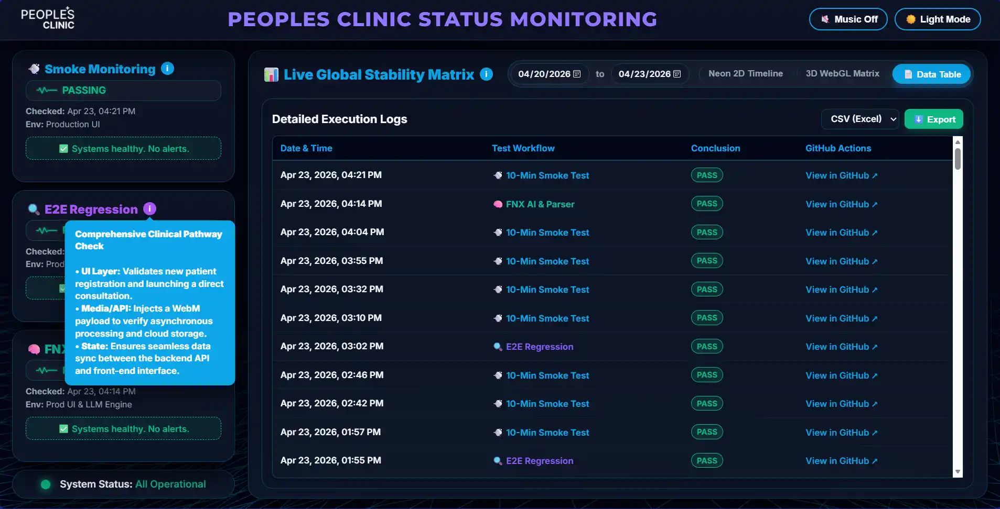

Implementation
- Playwright and Python workflow checks.
- Three GitHub Actions workflows and their schedules.
- UI/API regression, parser and AI-behaviour checks.
- Failure artifacts, execution history and cooldown-aware alerts.
01 / Workflow validation · Playwright / Python / GitHub Actions
Automated checks test selected login, consultation and API paths. Scheduled runs save their results, with screenshots to help investigate failures.
How the QA suite works
The map shows the software parts.
The animation shows what happens during a run.
Select a box to read its role, then use the button to watch the relevant example.
Try a failed check, a pass or a repeat failure whose email is held back.
These examples explain the workflow. They never run clinic checks or retrieve private artifacts. The implementation and its limits are described below.

My contribution
A page can load while a login, consultation or API path still fails. I connected selected workflow validation with scheduled execution and a dashboard, so each suite’s state and execution history can be inspected together.
I kept paused monitors visible and connected failures to artifacts and cooldown-aware alerts. The documented 10-minute smoke-test schedule and three suites describe the implementation, not a measured business outcome.
Keep each suite’s state and history visible, including paused monitors, so a result can be checked in context. The dashboard is the destination for execution evidence; the illustration above is only a historical screenshot.
These checks cover selected behaviour. They do not establish clinical accuracy, replace clinical review or guarantee availability. The portfolio page and its diagram do not execute tests against the application or display live monitoring results.
My focus was workflow checks, integration, scheduled execution and the evidence available for investigating failures. No patient information or private execution artifacts are reproduced here.